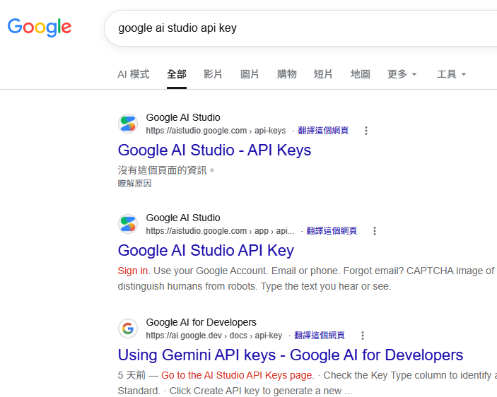
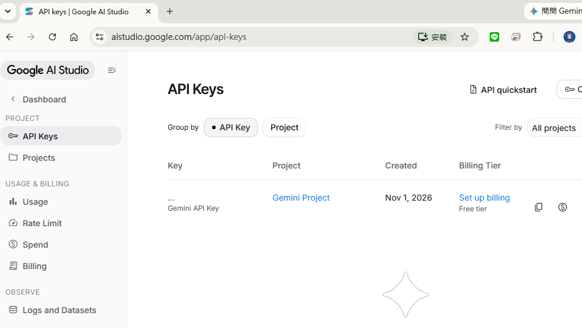
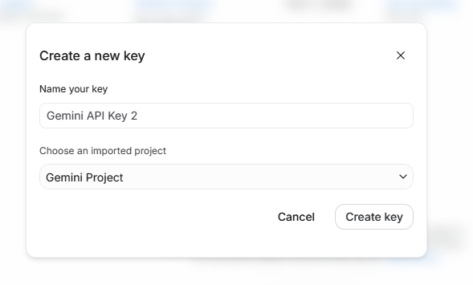
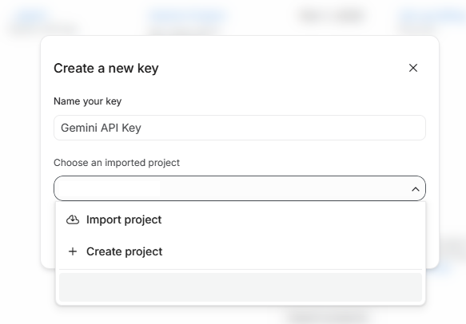
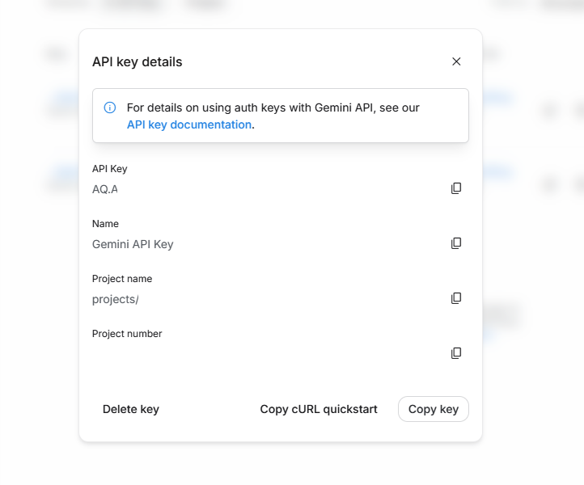

1
搜尋並開啟 Google AI Studio
在 Google 搜尋 google ai studio api key，確認結果網址是 aistudio.google.com。

橘框標示官方 API Keys 搜尋結果；開啟後可直接進入建立金鑰的頁面。
跟著下列 5 個步驟建立 Gemini API key，再把它貼到連接你的 AI 按鈕的 Google AI Studio 設定中。即可使用免費的AI
長庚師生請貼上您的 CGU API Key
在 Google 搜尋 google ai studio api key，確認結果網址是 aistudio.google.com。

橘框標示官方 API Keys 搜尋結果；開啟後可直接進入建立金鑰的頁面。
登入 Google 帳戶後，在左側專案導覽列點選 API Keys。

若頁面要求登入，請使用你要管理 API key 的 Google 帳戶登入。
在 API Keys 頁面按右上角的 Create API key，開啟建立視窗。

可在 Name your key 欄位輸入容易辨識的名稱，例如 HomeworkQuiz-dev。
在 Choose an imported project 選擇現有專案；若沒有合適的專案，可選 Create project。

橘框標示目前選取的專案與下方的 Gemini Project 選項；請確認專案名稱正確再建立 key。
建立成功後會顯示 API key details。按 API Key 右側的複製圖示，或按右下角 Copy key。

API key 只會在這個流程中直接呈現。複製後立即貼到 AI Homework Quiz 的 Google AI Studio 設定欄位。
no-cors 或第三方 proxy 掩蓋錯誤。需要重新開啟時，可直接使用 Google AI Studio API Keys。